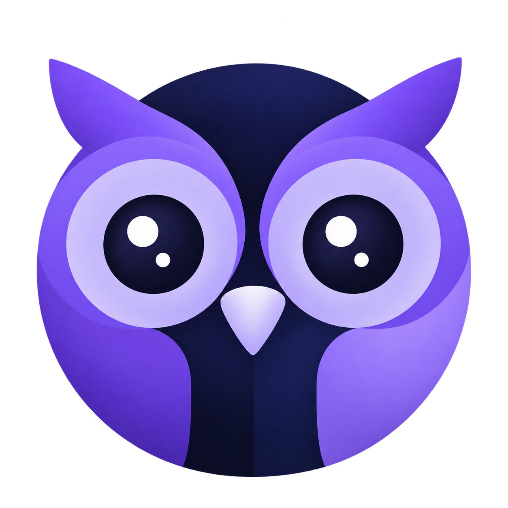
night owlСонгосон төрхийг
ажилладаг апптай холболоо.
Газрууд, Social, Профайл гэсэн гурван үндсэн дэлгэцийг доорх reference-ийн бүтэц, өнгө, лого, зай авалттай нийцүүлсэн. Нийтлэл, story, газар, нэр, тоо нь аппын бодит өгөгдлөөс харагдана.
Таны сонгосон эх загвар
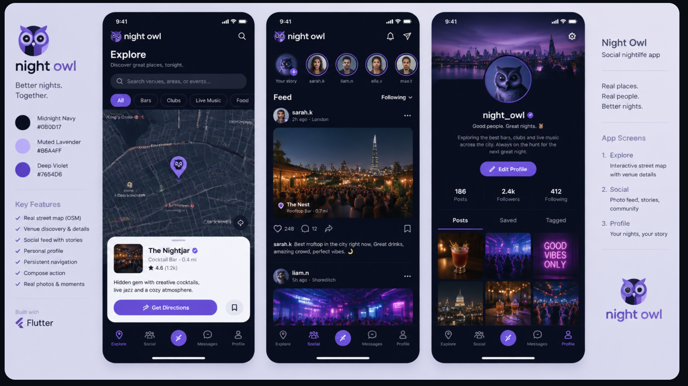
Шинэ аппын бодит гурван дэлгэц
Доорх нь шинэ кодтой локал web аппын screenshot. Reference доторх жишээ нэр, дагагчийн тоо, постыг аппын өгөгдөл болгон хуулж оруулаагүй.
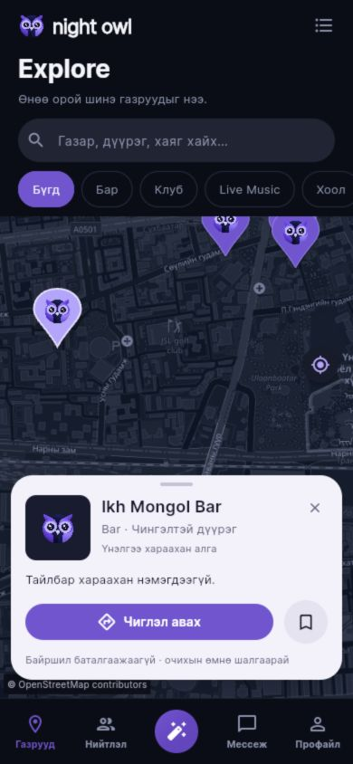
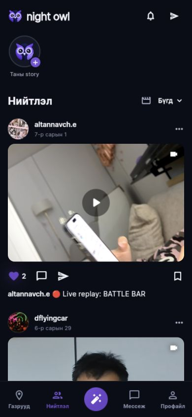
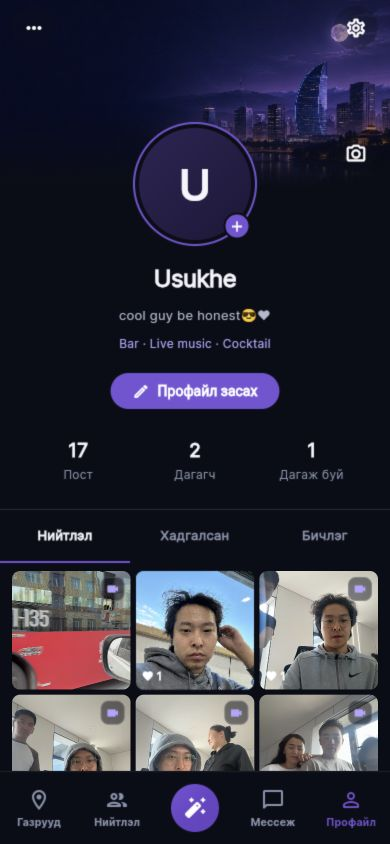
Өдөр, шөнө ба хэмжээст үйлдлүүд
Шинэ локал web release build-ийн хоёр горимыг зэрэгцүүлэв. Settings-ийн “Харагдах байдал” хэсэгт Өдөр / Шөнө / Систем сонголт байна; Нийтлэл болон Мессеж дээрх нар/сар товч хурдан солино. Систем горим төхөөрөмжийн brightness-ийг дагана.
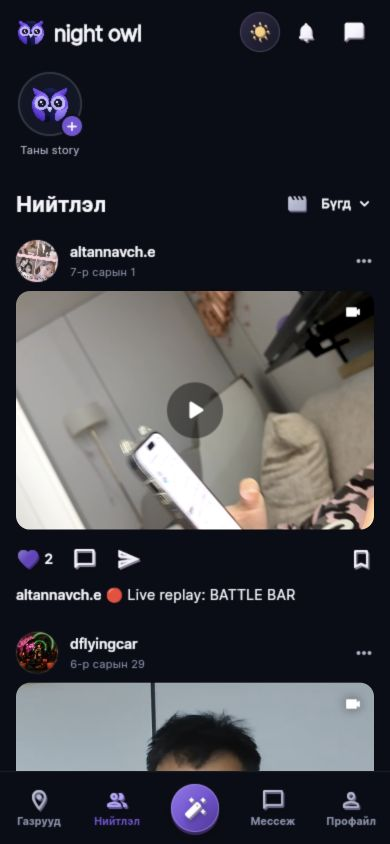
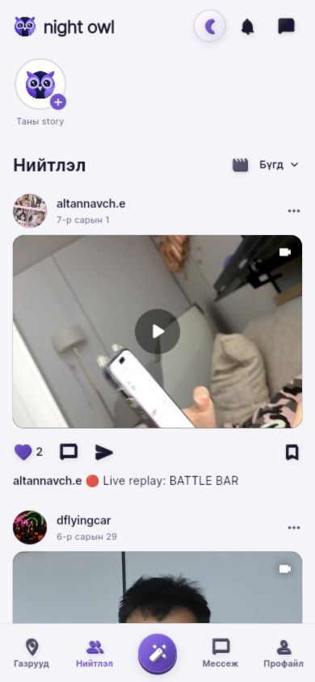
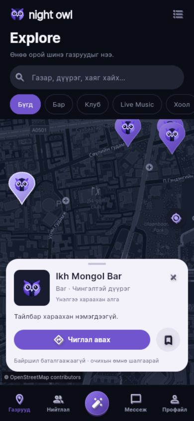
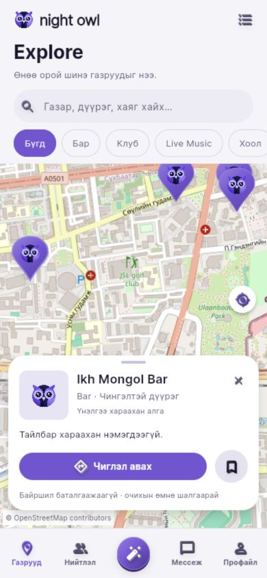
Хэмжээст дүрс, товч нь Flutter vector давхарга, gradient shader, ирмэг/сүүдэр болон дарах хөдөлгөөнөөр дүрслэгддэг UI. 3D model эсвэл шинэ AI artwork биш; таны сонгосон flat owl, cover/feed/grid болон хавтгай таван үйлдэлтэй footer хэвээр.
Горим төхөөрөмж дээр дарааллаар хадгалагдана. Удаан startup read шинэ сонголтыг дарахгүй; хадгалалт бүтэлгүйтвэл хамгийн сүүлийн сонголтыг өмнөх хадгалсан утгад буцааж тайлбар харуулна. Dispose болсон notifier-ийн хожуу үр дүн өнгийг өөрчлөхгүй.
Хөтөчийн шалгалтаар өдрийн горим reload-ийн дараа, Мессежийн хайлт горим солиход хадгалагдсан. Мессеж илгээгээгүй.
Reference → ажилладаг хувилбар
| Хэсэг | Сонгосон бүтэц | Одоо хэрэгжсэн зүйл |
|---|---|---|
| Лого | Жижиг owl mark + lowercase “night owl” | Таны сонгосон owl дүрд үндэслэн imagegen-ээр шинээр бүтээсэн mark, нийтлэг wordmark. Өмнөх angular owl icon-оос шинэчилсэн. |
| Доод цэс | Explore · Social · нийтлэх · Messages · Profile | Газрууд · Нийтлэл · төвийн үүсгэх товч · Мессеж · Профайл. Бүтэн өргөн 72px цэс дээр төхөөрөмжийн safe area нэмэгдэнэ; сонгосон хэсэг violet өнгөтэй. |
| Газрын зураг | Хайлт ба category нь зураг дээр; газрын detail доор | OSM-ийн бодит гудамж, нэр/төрлөөр хайлт, сонгосон pin ба газрын мэдээлэл, чиглэл, байршлын үйлдлүүд. Өдөр/шөнийн tile өнгө, camera хадгалах ажиллагаа; зай ба картын байрлал reference-тэй нийцсэн. |
| Дүрс ба горим | Танил action glyph, navy/violet өнгө | Хэмжээст glyph ба товч, Settings-ийн Өдөр/Шөнө/Систем; Нийтлэл/Мессеж дээр нар/сар хурдан солих товч. Cover болон медиа үйлдлийн цагаан дүрс хэвээр. |
| Social толгой | Owl wordmark, outline notification/message; story мөр шууд доор | Мэдэгдэл/мессежийн холбоос, өөрийн story үзэх/нэмэх, бодит story-нуудын нимгэн цагираг. Том discovery hero болон өмнөх TonightCard энэ feed дээр байхгүй. |
| Пост | Avatar, нэр, хугацаа; rounded landscape зураг; outline үйлдлүүд | Бодит зохиогч/хугацаа/газар/тайлбар; 3:2 медиа, like/comment/share/save. Том үсэгтэй нарийн дэлгэцэд тоонууд үйлдлийн доор шилжиж багтана. Refresh, pagination, retry хадгалагдсан. |
| Шүүлтүүр | Feed heading + Following dropdown | “Нийтлэл” + Бүгд/Дагаж буй нь бодит дагадаг хаягуудаар шүүнэ. Reels тусдаа icon-оор, эвентүүд dropdown-оос нээгдэнэ. |
| Профайл | Cover, centered avatar, edit pill, plain stats, underlined tabs, square grid | Өөрийн бодит профайл, нэр/био/тоо, засах үйлдэл; нийтлэл/хадгалсан/бичлэгийн tab ба гурван баганатай зураг. Reference-ийн жишээ verified badge, тоо, tagged контент үүсгээгүй. |
Компьютерийн шинэ харагдац
Өргөн дэлгэцэд навигаци хажуу талд байрлаж, утасны үндсэн дэлгэцийн бүтэц хадгалагдана.
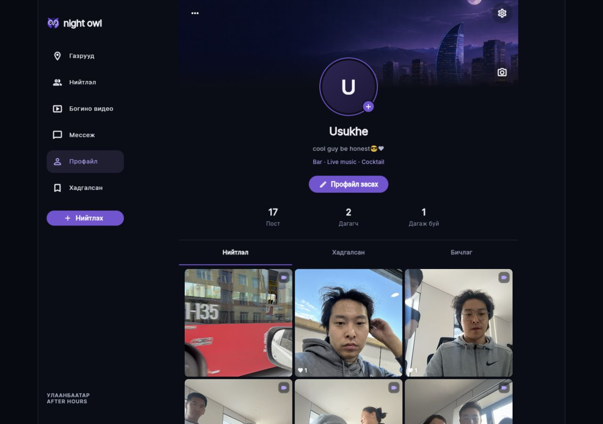
Өмнөх хувилбартай хийсэн харьцуулалт
Эдгээр нь шинэ сонголтоос өмнөх ажилладаг хувилбарын зураг. Өмнөх Higgsfield reference, хотын illustration, icon нь эхний дизайны чиглэлд хувь нэмэр оруулсан. Одоогийн хэрэгжилт дээр таны шинээр сонгосон эх загвар болон шинэ owl mark-ийг ашиглаж байна.
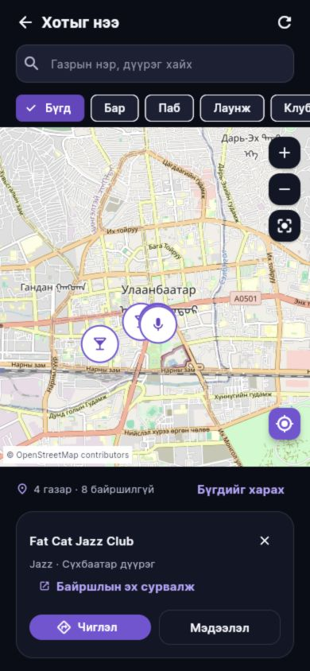
Өмнөх map layout
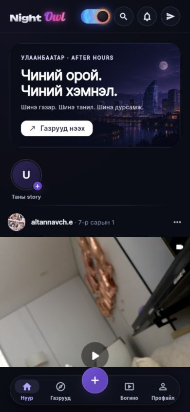
Өмнөх feed layout
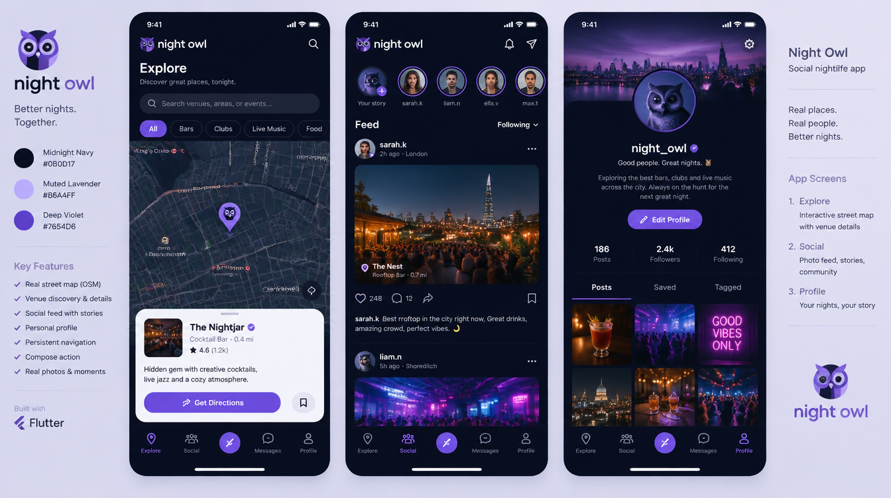
Одоогийн хүрээ
Апп үнэгүй: төлбөр, subscription, premium unlock, in-app purchase идэвхгүй. QPay болон төлбөрийн түүхийг хассан. Газрын/эвентийн орох үнэ нь мэдээлэл; RSVP нь тасалбар эсвэл төлбөр биш.
Бүтэн suite-ийн 103 тест амжилттай, JavaScript web release build дууссан. Энэ шинэчлэлийн GitHub push болон public deployment баталгаажаагүй; дээрх зургууд локал хөтөчийн proof.
Apple товч ба нэвтрэлтийн урсгалын код бэлэн ч серверийн Apple provider идэвхгүй; бодит Apple тохиргоо хойшлуулсан, нэвтрэлт баталгаажаагүй. Native binary/signing, серверийн check-in ажиллагаа, store-д шаардлагатай ашиглаж болох апп доторх бүртгэл устгах зам болон төхөөрөмжийн шалгалт үлдсэн.
Live, дуудлага, push, private account бүрэн интеграцгүй. Шинэ харагдац нь эдгээрийг ажилладаг гэж зарлахгүй. Газрын найман байршил бүртгэх шаардлагатай, хоёр pin нэмэлт баталгаажуулалт хүлээгдэж байна. Store submission хараахан бэлэн биш.